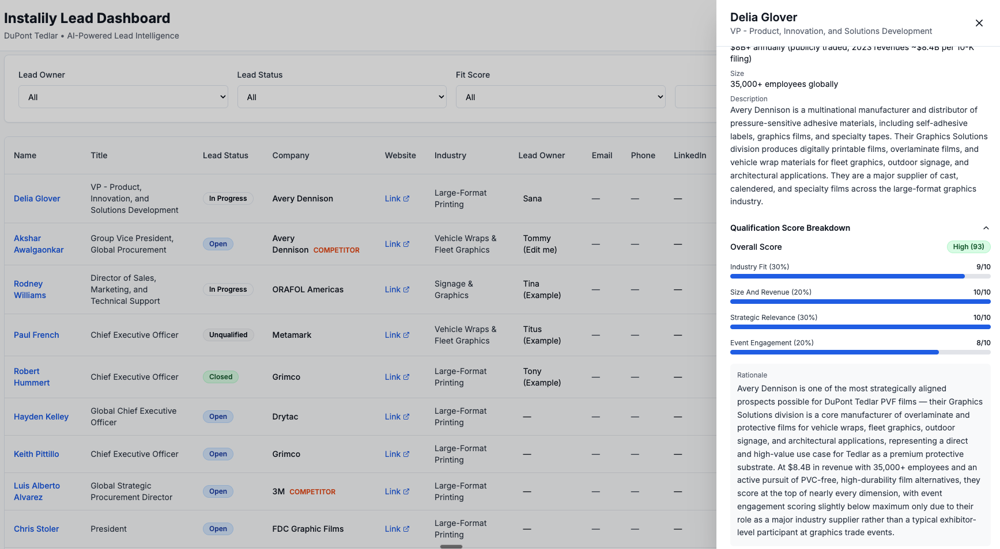
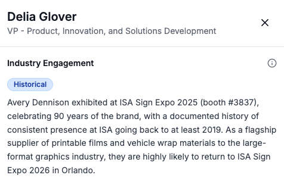

My first project in this series was a personal AI news digest: a single agent that monitored sources, filtered by relevance, and delivered a daily summary to my inbox. It ran on a cron job and the only user was me. This project is the next step up: a three-agent pipeline that generates scored, outreach-ready leads for a CRM, deployed in production on Vercel with a Next.js dashboard. The scope is bigger on every dimension: more agents, more complex orchestration, a real database, a production deployment, and an end user who isn't me.
The thread connecting both projects is the same question: what does it actually take to deploy an agent that does useful work? In the digest project, that question was mostly about output quality and reliability for a single user. Here it became about how to orchestrate multiple agents, structure their search and handoffs, and build something that holds up outside of a demo environment. This post covers how I thought through those problems, in the order they surfaced.
The Use Case
For this project I needed a realistic test case. I picked a hypothetical company in specialty manufacturing: a materials company that produces protective films used in industries like architectural graphics, vehicle wraps, and large-format signage. The product category doesn't have an obvious buyer profile, which made it a useful stress test for an automated lead generation system.
The goal was to build a CRM tool that automatically generates a list of high-quality leads. More specifically, for each lead the pipeline should produce three things:
- A matching company that fits the Ideal Customer Profile (ICP). An ICP is a definition of the type of company most likely to need your product, based on criteria like industry, company size, and how they use relevant product categories. In this case: companies in large-format graphics, vehicle wraps, fleet graphics, or architectural graphics, operating at meaningful scale.
- Decision-makers at the right level within that company: named contacts with the seniority and role most likely to be involved in a purchasing decision, such as VP of Procurement, Head of Partnerships, or R&D Director.
- Industry engagement context: which relevant trade shows the company attends or has attended, so outreach can reference something specific rather than leading with a generic pitch.
The output of a successful pipeline run is a dashboard populated with enriched, scored leads that a sales rep can open on a Monday morning and act on without having to do their own research first.

First Framing: An Orchestration Problem
The obvious way to structure this is as an orchestration problem: identify the distinct jobs to be done, assign each to a specialized agent, wire the outputs together in sequence. I broke it into three agents. Agent 1 discovers companies. Agent 2 enriches each company with contacts and context. Agent 3 drafts personalized outreach per decision-maker. The pipeline runs sequentially: the output of each agent feeds directly into the next.
That architecture is correct, and it's still the structure I'm using. But when I ran the first iteration, the results were poor. Not broken, just not useful. The company list was too short, the companies that did appear weren't consistently good fits, enrichment was patchy, and the outreach drafts were generic. Getting the orchestration structure right took about a day. Getting the search logic inside each agent right took considerably longer, and connects directly to a broader reflection I'll come back to at the end of this post.
The agents were searching in ways that produced mediocre results, and no amount of refinement at the orchestration level would fix that. Each agent needed to be designed to search efficiently, in a sequence that built on what the previous agent had found.
The Search Space Problem
The first version of Agent 1 anchored discovery on industry events. The hypothesis was that I could get the highest-signal leads by finding companies attending relevant industry events — guaranteed to be operating in the right space, and reachable at those events. However, this narrowed the search space far too much. I ended up with very few results: eight to ten companies per run across the entire ICP, which isn't enough to be useful and doesn't justify the compute cost.
The fix was to change the discovery mechanism entirely. Using Exa's findSimilar API, seeded from a set of reference company URLs I knew were strong ICP fits, Agent 1 now asks a different question: not "who attends these shows" but "who looks like these companies." This consistently returns 20 to 30 candidate companies per run.
Event and trade show data didn't disappear from the pipeline. It moved to Agent 2's enrichment phase (Phase C — more on the full Agent 2 structure in the technical companion post), where it became a context signal rather than the primary discovery mechanism. A company that appears in the similarity search and has confirmed event attendance gets a higher engagement confidence score. A company with no event data still makes the list, carrying an "inferred" engagement confidence rather than "confirmed." The distinction is visible in the dashboard output and reflects what I actually know, rather than leaving a blank where useful information should be.
Designing the Qualification Rubric
Once Agent 1 returns a pool of candidate companies, Agent 2 enriches each one and produces a qualification score. The rubric is a weighted composite across four criteria:
- Industry Fit (30%): Is the company's core business in large-format graphics, vehicle wraps, fleet graphics, or architectural graphics?
- Strategic Relevance (30%): Do they use, specify, or procure protective overlaminates or durable graphic films? This is the direct product fit question.
- Company Size and Revenue (20%): Revenue above $50M or 200-plus employees? Smaller companies score proportionally lower on this dimension.
- Industry Engagement (20%): Active presence at relevant trade shows and associations?
Each criterion is scored 0 to 10. The weighted total produces a score out of 100, mapped to a label: High (70 and above), Medium (40 to 69), or Low (below 40). The rubric serves two purposes: ranking (score determines where a company appears in the dashboard) and explainability (every lead shows a breakdown by criterion so the reasoning behind the score is visible rather than collapsed into a single number).
One important caveat: the weights I chose (30/20/30/20) are somewhat arbitrary. They encode a first-pass judgment about what matters most for this particular ICP, but they haven't been validated against actual outcomes. In a production setting, this rubric would need to go through multiple rounds of human calibration — ideally informed by which leads actually convert — before the weights carry any real predictive weight. This is the same problem I explored in Part 2 of this series, where I used an LLM as a judge to evaluate output quality: the evaluation framework is only as good as the criteria you encode into it, and those criteria need to be tested against ground truth.
Early versions of the pipeline used qualification as a hard filter: score each company and pass only those above a threshold to the outreach agent. This produced too few leads because the confidence intervals on inferred signals are wide enough that a strict filter cuts out real candidates alongside noise. The change was to treat qualification as a ranking mechanism, not a gate. All enriched leads reach the dashboard; the score determines visibility and order.
The rubric weights and other v1 assumptions (the "inferred" engagement tier is a projection, not a verified data point; the outreach tone hasn't been tested across different recipient roles; deduplication by company name and URL will break on subsidiaries) are all intentional starting points, not oversights. They're parameters that need real-world usage to calibrate. The architecture makes them easy to adjust without rebuilding core pipeline logic — but the calibration itself requires the system to be in production first.
The 3-Tier Engagement Model
One concrete consequence of the explainability principle is how I handle the industry engagement field. An earlier version of the data model was binary: a company either had confirmed conference attendance or the field was null. Null fields provide no actionable information and make the output feel incomplete for a large portion of the lead list.
The 3-tier model ensures the field is always populated with a meaningful value:

"Confirmed" means I found a 2026 press release, exhibitor listing, or speaker slot. "Historical" means past attendance (2024 or 2025) but no current-year evidence. "Inferred" means the company's profile is consistent with the ICP and industry, but no attendance records were found. All three are explicitly labelled — the pipeline is transparent about what it knows and how it knows it.
Thoughts on Next Builds
1. Dynamic RAG model
The most significant architectural upgrade is adding semantic search over the lead database. Supabase supports pgvector natively, which means I can store vector embeddings of each company's enriched profile alongside the structured data. Instead of filtering by column values, a user could run a query like "find companies similar to this one I just closed" and get semantically matched results. Paired with a "save search intent" feature — where a saved query runs nightly and surfaces net-new matches automatically — this shifts the product from a batch pipeline to a continuously updating intelligence layer.
2. Auth
Currently the dashboard has no authentication: anyone with the URL can view and edit leads. Adding basic login via Supabase Auth would gate access and create the foundation for per-user data isolation. This is a relatively small lift given Supabase's built-in auth support, and it's a prerequisite for everything that follows.
3. Multi-user IAM
Once auth is in place, the natural next step is proper Identity and Access Management: multiple reps each seeing only their assigned leads, with an admin layer for assigning ownership and viewing aggregate pipeline health. Supabase's Row Level Security (RLS) handles this at the database level — a policy that filters rows by the authenticated user's ID means each rep's dashboard query automatically returns only their leads, with no application-layer filtering needed.
4. Parallelising agents
Agent 2's four enrichment phases currently run sequentially per company, one company at a time. There is no technical reason they can't run concurrently: Python's asyncio would allow all 20-plus companies to be processed in parallel, reducing enrichment time from roughly 8 minutes to closer to 3. Supabase handles concurrent writes without issue. This is the highest-leverage engineering improvement for the next version.
5. Automating the search job
The pipeline currently runs on demand. For production, I want it running on a nightly schedule so the dashboard shows fresh results each morning without a manual trigger. A GitHub Actions cron job is the right infrastructure for this — stateless, free at this scale, and easy to configure. I used the same pattern in the daily digest project covered in Parts 1 and 2 of this series.
6. Caching search results
Every pipeline run currently starts from scratch: Exa re-discovers the same ICP pool and Claude re-enriches companies already in the database. The deduplication happens at the Supabase write step, which means I'm spending most of each run's compute budget on leads I've already processed. The better approach is to cache the discovered company pool and only pass net-new companies through enrichment. The deduplication check moves to before enrichment rather than after, making each run significantly faster and cheaper as the database grows.
What This Project Taught Me
In Part 1 of this series, one of the core takeaways was that agency is not binary. It exists on a spectrum: a poorly prompted agent given the right tools will produce mediocre output, while the same agent given a clear goal, explicit constraints, and well-structured tool access can perform dramatically better. The difference isn't the model. It's the design of the agent's context.
I saw the same pattern here, but one level up. The problem isn't just about designing a single agent well — it's about designing a group of agents so that each one's output meaningfully feeds and strengthens the next. When I first built the three-agent pipeline, I gave each agent tools and a rough job description. The results were okay. When I redesigned Agent 1's search strategy, gave Agent 2 a structured four-phase enrichment sequence, and made each phase's output a direct input for the next, the pipeline's overall quality improved substantially — with the same models and the same tools.
The lesson generalises: it's not about creating a swarm of agents and chaining them together. It's about giving each agent a clear goal and a well-defined search strategy, and sequencing their interactions so that earlier outputs constrain and inform what later agents do. That's where human expertise matters most — not in writing the prompts, but in understanding the domain well enough to design the right sequence of questions for the agents to answer.
The companion post covers the infrastructure side: why I rebuilt from Streamlit to Next.js, the deployment options I evaluated, the Vercel and Supabase architecture, and the efficiency problems that are still open.
AI Agents Lead Generation Solutions Architecture Agent Orchestration Exa API Sales Tools